Tape
A loop in memory with sixteen slices on the keys. Move where it starts and ends, transpose it, lock it to the tempo, freeze a sliver of it, or let it warble like a worn cassette.
Firmware for the M-VAVE FM-1
Bryo turns the FM-1 into a four-track instrument for growing sounds. Play a loop, record over it, and let it drift. Everything is a pad and a knob away.

Bryo is new firmware for the M-VAVE FM-1. It gives you four tracks. Each one starts with a sound and sends it through four effects, always in the same order.
Let's start with the tape, because everything grows from it. A tape is a loop that lives in memory. Press PLAY and it plays. Press a white key and you hear one of its sixteen slices. Press REC and it records the other three tracks onto itself, so you can bounce an idea down and keep building on top.
The four tracks share about 20 seconds of memory. A track only takes what it records, so three short loops leave room for one long one.
There are no menus. Each page shows four values, and the four knobs change those four values. Press a pad again to see its next page. Hold a pad and the white keys light up, one for each page, so you can jump straight there.
Every screen on this site comes from the same code that runs on the FM-1. What you see here is what you'll see on the device. Watch it in action below.
Here's the FM-1 with Bryo on it. Pick a routine and follow along: the pads and keys light up as they're pressed, the knobs turn, and the screen shows what Bryo shows at each step.
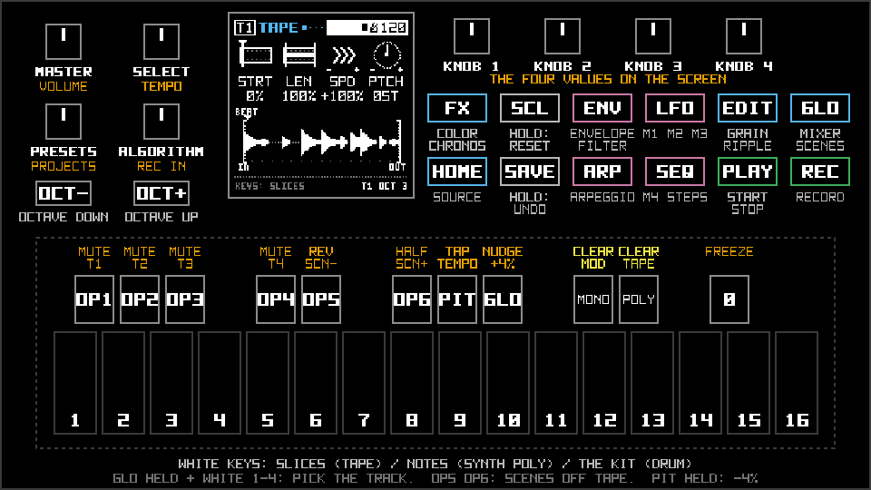
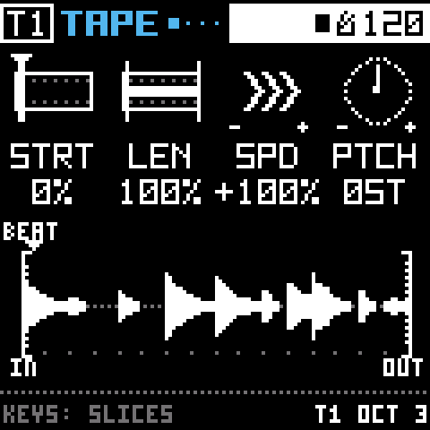
A sound always takes the same path: the source, then GRAIN, RIPPLE, COLOR and CHRONOS. Since the order never changes, you always know where to look. Each effect's first page ends with its mix knobs. Press EDIT or FX, turn KNOB 4, and you'll hear the effect fade in.
Pick a tape loop, a synth, a sampler that spreads sounds across the keys, or a drum machine. Hold HOME and turn SELECT to switch. Each source remembers its own knobs, so you can switch back without losing anything.
HOME has the source itself. ENV has everything that shapes it: the envelopes, the filter, and on DRUM the kit.

GRAIN listens to the last few bars of the track and plays them back as tiny overlapping pieces. You can stretch them out, hold them on one spot, or let them trail behind with SCAN.
Hold the black 0 key to freeze what it heard into a loop. Tap it instead and the freeze stays on until you tap again. The grains can follow the project's key, and BODY gives every grain a pitched partial of its own, so a busy cloud plays a chord.

Something tuned that the track's sound rings through. Hold EDIT and turn SELECT to pick what: four plucked strings, a hollow COMB that only rings the odd harmonics, four resonant bands, or a 12-band filter bank that sorts whatever comes in into a chord.
Each form comes out about as loud as what goes in, so turning WET up is a real change: a drum loop through the 12-band bank gets sorted into the chord's notes. The second page is the form's own. The strings get detune, drift, drive and pick. The comb gets POL, for a hollow or a metallic ring. The resonators get a spotlight (FOCS and WDTH), and FLOW, which walks the sound up and down through the bands by itself.
The notes come from a chord you choose, from major and minor to sevenths and power chords. On its page the white keys set the root. With KEYS on PLCK they pluck it too; on TUNE they only retune it, so what rings is the track's own sound.
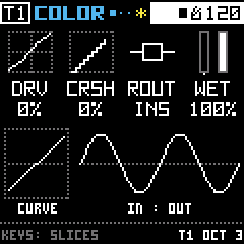
Drive, bit crush, noise that follows the sound, and a tilt EQ. The page draws a sine wave through the whole stage, so you can see what the distortion does to it before you hear it.
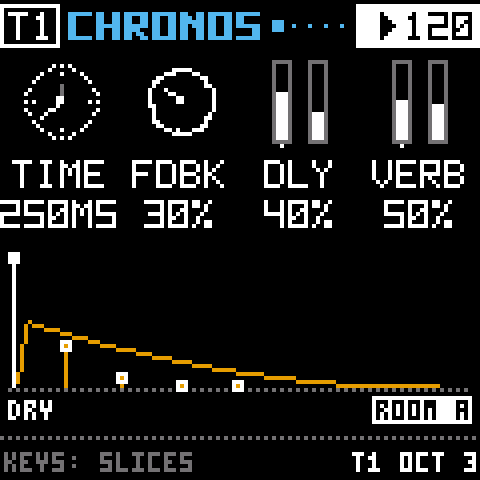
A delay and two rooms. The tracks share the rooms, and each track decides how much to send with its own DLY and VERB knobs.
The delay's pages come first, then the room's. The echoes can sync to the tempo, wear like old tape (AGE), melt into a wash (DIFF), or duck out of the way while the track plays (DUCK). Each room can be a room, a plate, a hall or a spring, and MOD makes its tail waver so it sounds less metallic. They only use memory while you're using them, so a dry project has more room for tape.
A loop in memory with sixteen slices on the keys. Move where it starts and ends, transpose it, lock it to the tempo, freeze a sliver of it, or let it warble like a worn cassette.
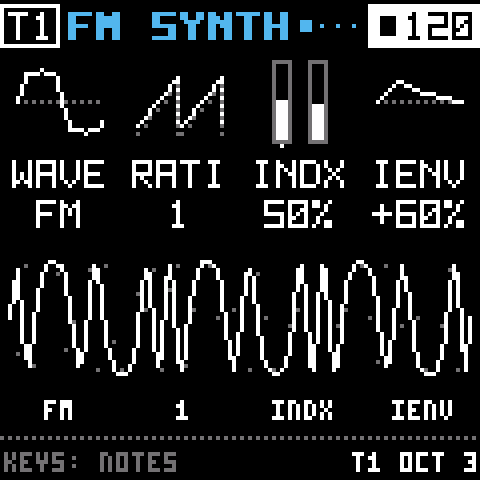
Three voices and nine waves: the classics, FM, PD (the Casio CZ's sweep), VOX and WT. A second envelope can open the filter, bite the drive or zap the pitch, and the filter sings on its own past RES 93. CHRD plays a whole chord from one key.
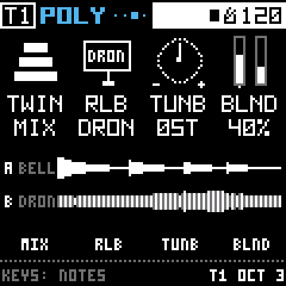
Plays any reel, or the track's own tape, across the keys. LOOP holds a note as long as you like, and TWIN adds a second reel to blend, split across the keyboard, or take turns note by note.
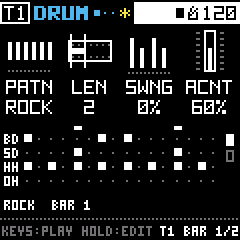
Sixteen drums, all synthesized, inspired by the CR-78. Ten patterns from one to four bars, and SEED plays them with small changes, the way a drummer would. TRAN adds a click to every hit.

Each track has four modulators. They move knobs for you, so a sound keeps changing while your hands are busy.
Three of them live on the LFO pad, and each can be an LFO, an ADSR envelope or an envelope follower. The fourth, on SEQ, is a step sequencer.
To make a knob move, hold LFO or SEQ and turn that knob. How far you turn sets how far it moves, from −100 to 100 %. Each modulator can move up to twelve knobs, and while you hold its pad the screen counts them for you. A knob that's moving gets a purple mark, so you can see what's alive at a glance.
The envelope follower levels itself: a quiet pad pushes its knobs as far as a loud drum does. Point it at the kick and everything else can duck in time.

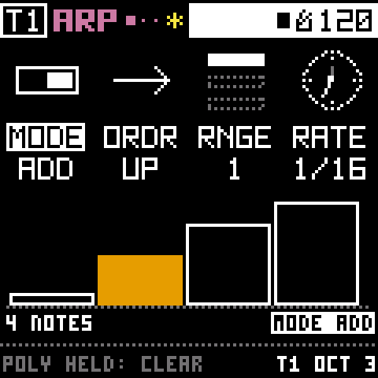
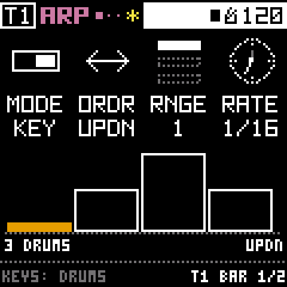

Hold a few keys and the arpeggiator plays them one at a time, in time with the tempo.
Every track has one, and it does something a little different on each source. On SYNTH and POLY it plays notes. On TAPE it steps through the slices you hold. On DRUM it walks through the drums you hold: hold kick, snare and hat with UPDN and you get kick, snare, hat, snare, kick. With SYNTH's CHRD on, every step is a whole chord.
While it plays, the keys light up with its notes, and the one sounding goes dark for its step. Press a lit key to take that note out. On page 2, FADE lets the pattern keep stepping after you let go and fade away, and GRND varies each note's length so it breathes. To clear everything, hold the black POLY key on the ARP page.
Press ARP a third time and you're on RIPL ARP. It plays RIPPLE, one note per step, whatever the track itself is playing. With RIPPLE's KEYS on PLCK each step plucks the strings; on TUNE each step retunes RIPPLE, so the track's own sound rings in the pattern. Turn RIPPLE's WET up to hear it. A latched pattern keeps going after you leave the page, so you can set it running and go shape something else.
Both follow the transport. STOP quiets them and keeps the notes, and PLAY starts them again from the top. Saving a project keeps the notes too.
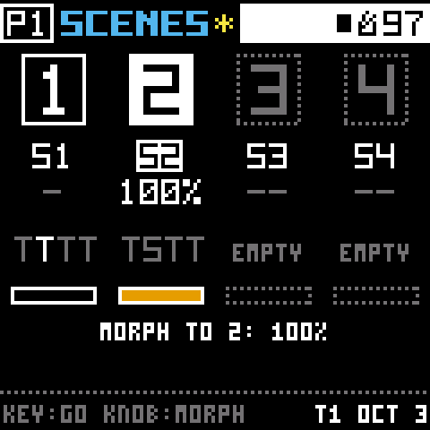
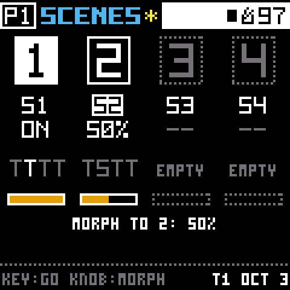
A scene is a snapshot of how the whole project sounds. Each project has four.
A scene holds every track's source and every knob that shapes its sound, plus the track levels and the rooms. It leaves what's playing alone: the tapes, the patterns, the modulation, the arpeggios, the tempo and the key all carry on when you change scenes.
Tap GLO, then EDIT, and you're on SCENES. The white keys 1 to 4 are the four scenes, and each knob sits under its scene.
If a track uses the same source in both scenes, its knobs morph smoothly. If the source changes, the track fades out, switches, and fades back in. Scenes are saved with the project, and the PROJECTS view shows how many each project has.
The factory project shows it off. It's one groove in A minor with three scenes: AMBIENT, a slow choir, drone and bowed bells; TECHNO, with the drums up and everything ducking on the kick; and GLITCH, crushed and stuttering. Turn KNOB 2, then KNOB 3, and drift from one to the next.
There's no release yet. Bryo runs on a real FM-1 now, and I'd like it to be played for a while before anyone trusts it with their music.
If you're happy building firmware, you can try it today. Bryo keeps Felucca's update path exactly as it was, so you can always go back.
Bryo exists because Felucca exists.
Leo Kuroshita (@kurogedelic) and Hügelton Instruments did the hard part. They worked out how the FM-1 works, wrote firmware for it from scratch, and shipped thirteen engines, a 4-track sequencer, USB audio and a web installer anyone can use. Then they shared all of it under the GPL, which is how I got to learn from it and build on it.
Bryo started from Felucca 1.0.3 (commit b22a24b), copied in unchanged so every change since is easy to see. It still runs on Felucca's hardware layer, update loader, USB and storage, with Leo's copyright lines in place. If Bryo is useful to you, please thank them too.
Sponsoring Hügelton helps keep projects like Felucca going.